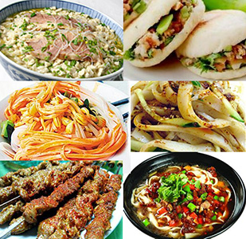

Xi'An Dining
Shaanxi Cuisine, also known as Qin Cuisine, is the representative culinary achievement in the northwest China. In comparison to other Chinese cuisines, it is outstanding in three aspects. Firstly, due to Shaanxi's geographical location in the center of China, various kinds of materials deriving from both north and south China are adopted. Second is the special cooking skills of the local chefs, including Tun (deep-fry), Qiang (fry quickly in hot oil, then cook with sauce and water), Chao (stir-fry), Zheng (cook by use of steam), Dun (braise) and so on. Finally is its frequently use of salt, vinegar, capsicum and garlic, making the savory flavor of sour, spicy and fragrant.
The history of Shaanxi Cuisine is said to be as long as the national's civilization, retaining the table characteristics of the Qin, Han and Tang dynasties. At present, the Cuisine has been divided into the Guanzhong (central Shaanxi), Shannan (south Shaanxi) and Shanbei (north Shaanxi) cuisines according to their geographical locations. Here, in Xian, the Guanzhong Cuisine plays the vital role in the citizens' daily lives as well as the Shannan and Shanbei dishes supply the gastronomists with another choice.
- Crumbled Flatbread in Mutton Stew
- Xian Dumpling Dinner
- Chili Oil Noodles